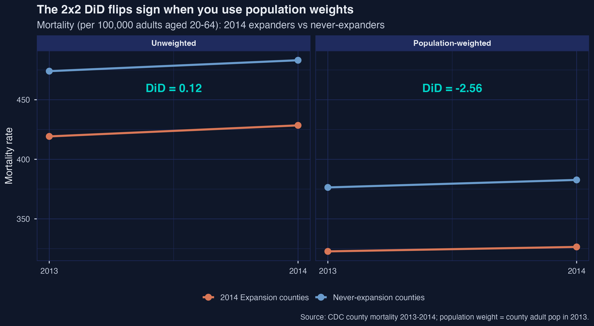
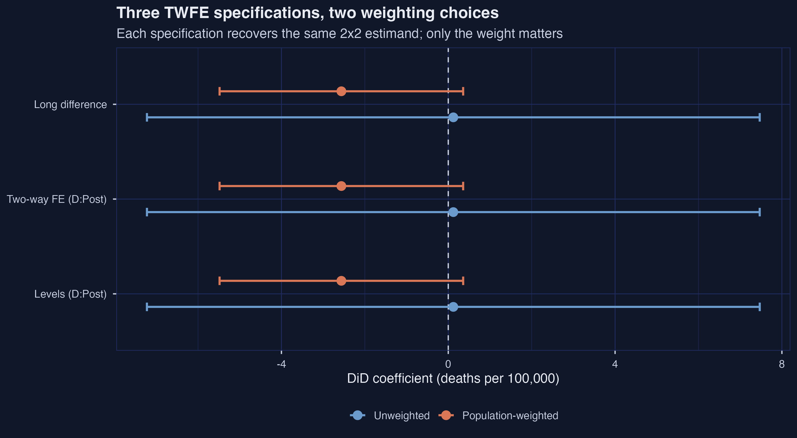
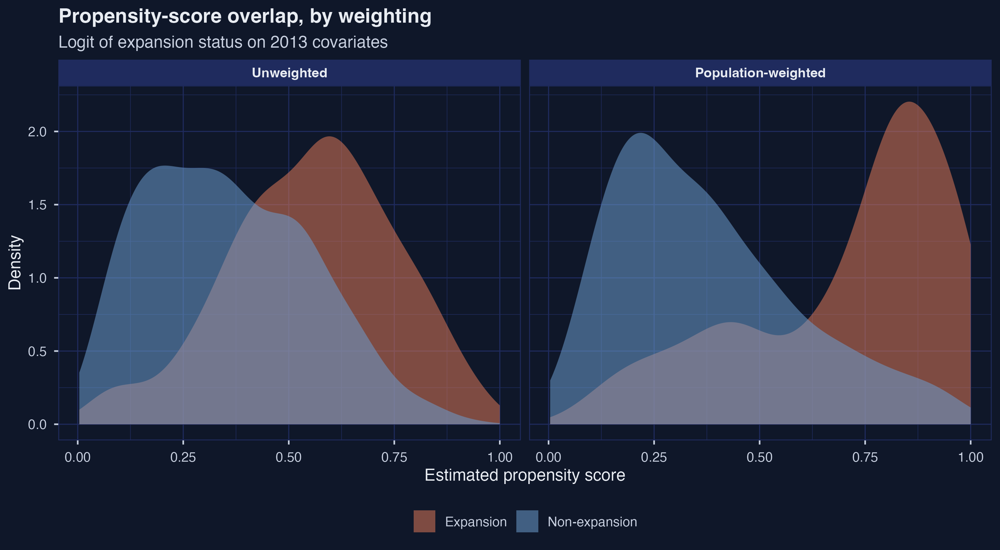
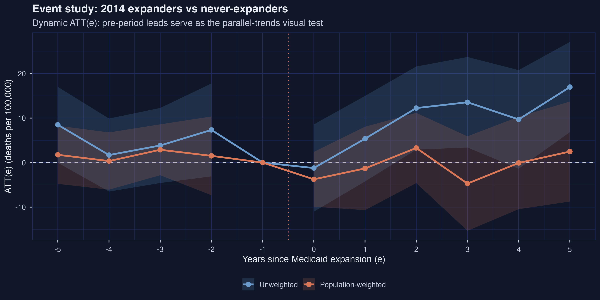
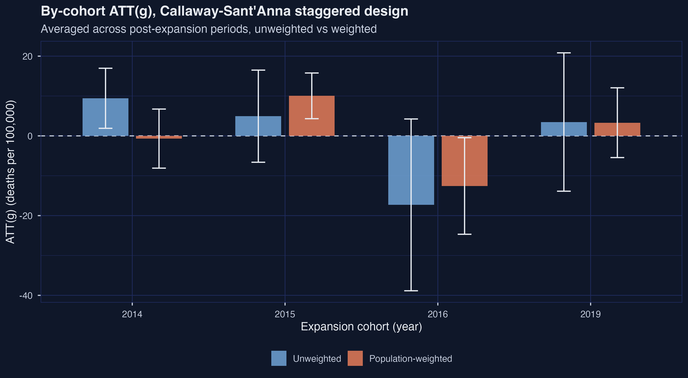
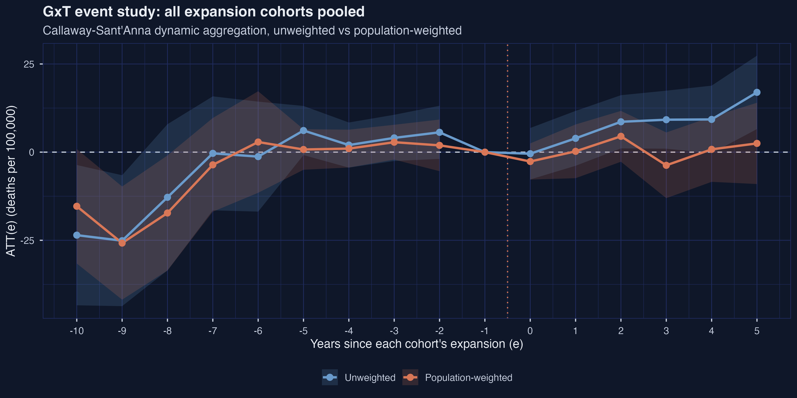
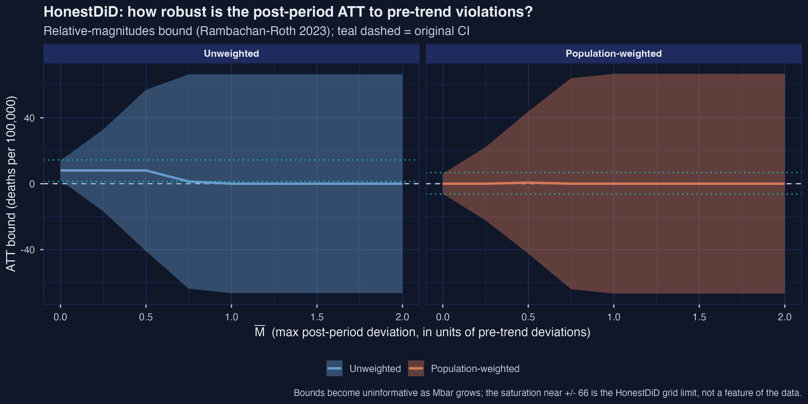

Did Medicaid expansion cut mortality? It depends who you weight by
Nagoya University (GSID)
June 11, 2026
Act I
Twenty million people gained Medicaid under the ACA’s staggered roll-out. Did fewer of them die?
In the simplest four-cell DiD, unweighted says \(+0.12\) deaths per 100,000 (no help). Population-weighted says \(-2.56\) (lives saved). Which number is the answer?

Cell-means: 2014 expanders (orange) vs never-expanders (blue), unweighted (left) and population-weighted (right). Nearly parallel slopes on the left (DiD \(\approx 0\)), visibly divergent on the right (DiD \(\approx -2.6\)).
Act II
\[\text{ATT}_\omega(2014) = \big(\mathbb{E}_\omega[Y_{2014}\mid D{=}1] - \mathbb{E}_\omega[Y_{2013}\mid D{=}1]\big) - \big(\mathbb{E}_\omega[Y_{2014}\mid D{=}0] - \mathbb{E}_\omega[Y_{2013}\mid D{=}0]\big)\]
The treated group’s change minus the control group’s change — both means taken under weighting scheme \(\omega\).
Equal weights \(\Rightarrow\) the typical treated county. Population weights \(\Rightarrow\) the typical treated adult. The subscript on \(\mathbb{E}_\omega\) carries the choice into the parameter itself.
| treat_year | counties | share counties | share adults (2013) |
|---|---|---|---|
| 0 (never) | 1,222 | 46.9% | 38.2% |
| 2014 | 978 | 37.6% | 49.5% |
| 2015 / 2016 / 2019 | 404 | 15.6% | 12.4% |
Population weighting rebalances toward large, urban 2014 expanders and small, rural never-expanders — a different comparison, not a tighter one.
# (a) levels: DiD is the interaction coefficient
feols(crude_rate_20_64 ~ D * Post, data = short_data, cluster = ~county_code)
# (b) two-way FE: same DiD, main effects absorbed
feols(crude_rate_20_64 ~ D:Post | county_code + year, cluster = ~county_code)
# (c) long difference: collapse to one row per county
feols(diff ~ D, data = short_long_diff, cluster = ~county_code)All three return \(+0.122\) unweighted and \(-2.563\) weighted — identical to three decimals.

Six DiD estimates (3 specs × 2 weights) with 95% CIs. The three rows within each weighting are superimposed; the weighting moves the point estimate by 2.7 deaths per 100,000.

Propensity-score densities by expansion status, unweighted (left) and population-weighted (right). Weighting piles treated mass near \(0.85\) and spreads control mass bimodally — overlap gets worse, not better.
\[\widehat{\text{ATT}}_{\text{DR}} = \frac{1}{n}\sum_{i=1}^{n}\big(\hat{w}_{D=1}(D_i) - \hat{w}_{D=0}(D_i, X_i)\big)\big(\Delta Y_i - \hat{\mu}_{\Delta, D=0}(X_i)\big)\]
Each county contributes a propensity-weighted residual: how far its 2013-to-2014 change strayed from the outcome model’s prediction for an untreated unit with the same covariates.
Belt-and-suspenders: the outcome model or the propensity model can be wrong — not both.
| method | unweighted | population-weighted |
|---|---|---|
| Outcome regression (OR) | \(-1.615\) | \(-3.459\) |
| IPW | \(-0.859\) | \(-3.842\) |
| Doubly robust (DRDID) | \(-1.226\) | \(-3.756\) |
Within-weighting spread \(\le 0.8\); across-weighting gap \(\approx 2.5\). None of the six 95% CIs excludes zero.
The dynamic design estimates an \(\text{ATT}(e)\) for every year relative to expansion, with \(e = -1\) omitted as the baseline.

Dynamic \(\text{ATT}(e)\) for the 2014 cohort with shaded 95% CIs; dotted line at \(e=-0.5\) separates leads from lags. The two weightings track together pre-2014, then diverge sharply.
\[\text{ATT}(g,t) = \mathbb{E}_\omega\big[Y_{i,t}(g) - Y_{i,t}(\infty)\mid G_i = g\big]\]
The effect of first expanding in year \(g\), relative to never expanding, evaluated at calendar time \(t\), restricted to units whose actual start year is \(g\).
Never make a mid-treatment unit serve as a “control” for an untreated one — the forbidden comparison that naive TWFE quietly makes.

By-cohort \(\text{ATT}(g)\) bars with 95% CIs. The 2014 cohort flips (\(+9.43 \to -0.68\)); the 2016 cohort is the only weighted CI excluding zero (negative), on just 93 counties.

GxT event study pooled across all four cohorts. Early leads (\(e=-10,-9\)) sharply negative (the lone 2019 cohort); from \(e=-7\) on, leads settle near zero; post-treatment the unweighted path reaches \(+16.96\) while the weighted stays within \(\pm 5\).
Act III
−2.56
the 2x2 ATT swings from \(+0.12\) (per county) to \(-2.56\) (per adult) — a sign flip with an identical pre-period gap
| stage | unweighted | population-weighted | gap |
|---|---|---|---|
| 2x2 cell-means / TWFE | \(+0.122\) | \(-2.563\) | \(2.69\) |
| 2x2 DRDID | \(-1.226\) | \(-3.756\) | \(2.53\) |
| 2xT dynamic (avg \(e\ge0\)) | \(+9.428\) | \(-0.684\) | \(10.11\) |
| GxT dynamic (avg \(e\ge0\)) | \(+7.917\) | \(+0.266\) | \(7.65\) |
The gap is widest where staggered cohort heterogeneity is in play, narrowest where the 2x2 forces a single comparison.

HonestDiD bounds across \(\bar{M}\), faceted by weighting. At \(\bar{M}=0\) the unweighted bound is all-positive \([+2.01, +14.09]\); the weighted straddles zero \([-6.07, +6.07]\). Both cross zero by \(\bar{M}=0.25\) and saturate at the grid limit (\(\pm 66\)) by \(\bar{M}=1\).
Objection. Callaway–Sant’Anna and DRDID are modern, robust estimators — surely they pin down the effect.
Response. They fix the aggregation (no forbidden comparisons) and discipline selection on covariates — but identification still rests on parallel trends, and HonestDiD shows it is fragile here. The ATT is identified only under conditional parallel trends; the estimators cannot manufacture it.
No CI excludes zero by a comfortable margin. When the policy is denominated in people, weight by people.